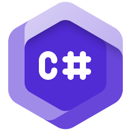

A level designer of 5 years. I have designed gameplay for 3D, 2D and VR games.

A programmer of 5 years specializing in C#. In addition I also know HTML and CSS.
A game developer of 5 years, I am a expert with both Unity and Unreal while also specializing in Unity.